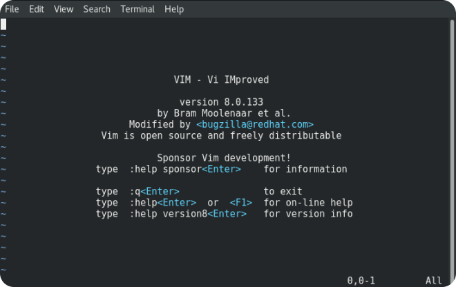

Текстовый редактор vim
Vim — это модификация текстового редактора Vi, созданного Биллом Джоем в 1976 году. Vim, в свою очередь, появился спустя 15 лет и стал одним из наиболее значимых приложений в истории компьютеров.
Главный экран редактора Vim
Vim использует довольно специфичную по нынешним временам модель управления, полностью построенную на идее модальности в угоду устаревшим клавиатурам, на которых не было стрелок и других уже привычных для нас клавиш.
99% поклонников Vim — это разработчики и гики
Несмотря на то, что нужды в Vim сейчас нет, он все еще популярен. Его поклонники образовали чуть ли не религиозный культ, строго верующий в Vim, защищающий его от противников и всячески продвигающий в обществе как лучшее, что могло быть изобретено для редактирования текста.
Чем хорош Vim?
Досконально изучив инструмент и натренировавшись в его использовании, вы становитесь на голову выше других спецов, потому что попросту тратите меньше времени на выполнение рутинных задач. Быстрее удаляете строки, быстрее перемещаетесь по коду, быстрее вносите изменения в разных участках файла и приложения целиком. При этом тратите не только меньше времени, но и меньше сил.
Вы учите Vim один раз и пользуетесь им везде. Независимо от выбранной ОС, у вас всегда будет доступ к Vim, и он будет таким же, как Vim в любой другой системе (если, конечно, вы не обвешаете редактор на своем ПК плагинами и темами).
А чем плох?
Чтобы освоить Vim и получить от него пользу (и удовольствие, конечно же), надо этого захотеть.
Возникает вопрос, почему Vim не используют все разработчики, раз он такой хороший. Ответ кроется в пороге вхождения. Он настолько высок для нового поколения пользователей ПК, что в интернете до сих пор гуляют мемы про то, как сложно закрыть Vim, если случайно его запустил.

Vim, без преувеличения, сложен в освоении. Даже заставить человека отказаться от использования стрелок и перейти на так называемый home-блок клавиш — тот еще квест.
Как установить Vim и начать им пользоваться?
Если по какой-то причине Vim не установлен в вашей ОС, то его можно установить выполнив команду установки.
Никто не запрещает использовать для перемещения курсора клавиши-стрелки, но такой подход рушит концепцию Vim.
Для начала нужно освоиться в управлении и понять, что можно делать в Vim, а чего нельзя. Чтобы перемещаться по тексту, используем клавиши H — влево, J — вниз, K — наверх, и L — вправо.
Чтобы удалить текст, мы используем клавишу X. Для выделения текста нужно перейти в визуальный режим при помощи клавиши V.
А чтобы ввести текст, переходим в режим INSERT. Это можно сделать несколькими способами, но вот два основных:
- Нажатие на клавишу I, чтобы начать ввод текста прямо на месте курсора.
- Нажатие на клавишу O, чтобы начать ввод на новой линии.
Для выхода из режима INSERT, нажимаем на кнопку Esc или комбинацию клавиш Ctrl + {.
Продвинутые пользователи переназначают Esc на другие комбинации клавиш, потому что на современных клавиатурах Esc находится слишком далеко и к ней приходится тянуться, а это противоречит концепции Vim.
Чтобы скопировать текст, используем клавишу Y, а чтобы вставить — P
А как же выйти из Vim?
Чтобы закрыть Vim, нужно ввести команду :wq. Она запишет внесенные изменения и вернет вас в терминал. Чтобы изменения не сохранялись, надо ввести :q!.